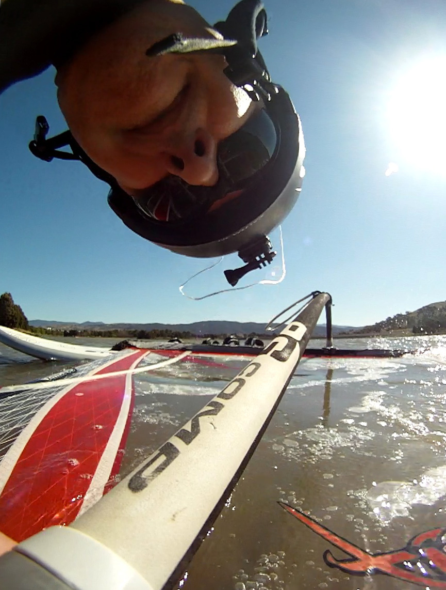

Prof Rodney A. Kennedy
Prof Rodney A. Kennedy
RSEng Engineering, CECS
Contact
Contents
rodney dot kennedy at anu.edu.au
Good luck getting through to me and my spam filter.
Postal Address
Prof Rodney A Kennedy
Research School of Engineering, CECS
The Australian National University
115 North Road
Acton ACT 2601
Australia
Brief Paper Biography

Rodney A. Kennedy (S’86–M’88–SM’01–F’05) received the B.E. degree (1st class honours and university medal) from the University of New South Wales, Sydney, Australia, the M.E. degree from the University of Newcastle, and the Ph.D. degree from the Australian National University, Canberra. Since 2000 he has been is a Professor in engineering at the Australian National University, Canberra, Australia.
He has co-authored close to 400 refereed journal or conference papers and a book “Hilbert Space Methods in Signal Processing” (Cambridge Univ. Press, 2013). He has been a Chief Investigator in a number of Australian Research Council Discovery and Linkage Projects. His research interests include digital signal processing, digital and wireless communications, and acoustical signal processing.
Campus Address
Room B136 Building 115 Cnr North & Daley Roads Acton ACT 2601